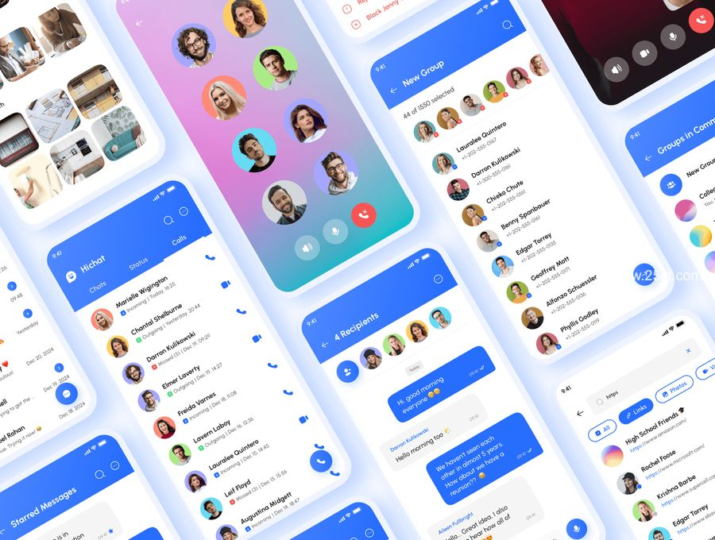

效率提升
从繁琐到一键解决
软件极大地优化了日常生活，将原本耗时费力的任务变得简单高效。过去需要排队办理的业务（如缴费、转账），如今通过移动支付软件（支付宝、微信支付）几秒即可完成；家务管理由智能家居App（如扫地机器人控制、智能灯光调节）自动化处理；导航软件（高德、百度地图）实时规划最优路线，避免拥堵。这些工具不仅节省时间，更减少了人为错误，让生活更轻松便捷
社交与连接
打破时空界限
软件重新定义了人际交往的方式，让沟通不再受距离限制。社交平台（微信、Facebook）让亲友随时保持联系，视频会议工具（Zoom、腾讯会议）支撑远程工作和在线教育；兴趣社群（小红书、豆瓣）聚集同好，形成虚拟朋友圈；短视频平台（TikTok、抖音）甚至推动全球文化共享。尤其在疫情期间，软件成为维系社会运转的关键，证明数字化连接已成为现代生活的刚需
个性化与创新
赋能每个人的创造力
软件降低了创作门槛，让普通人也能成为创作者。设计工具（Canva、Photoshop Express）让非专业人士轻松制作海报或PPT；短视频剪辑软件（剪映、CapCut）提供一键生成特效；AI绘画（MidJourney）和知识管理工具（Notion）激发个性化表达。教育类App（如Duolingo）则根据用户水平定制学习路径。这些技术赋予个体前所未有的创造力，推动“人人皆可创作”时代的到来
READ MORE